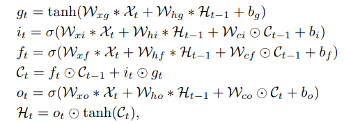
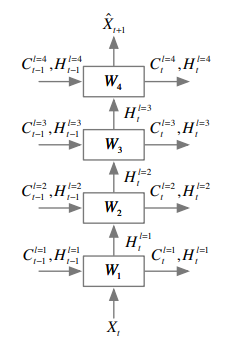
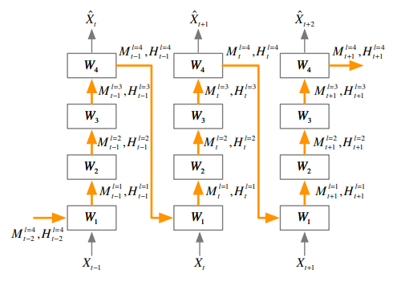
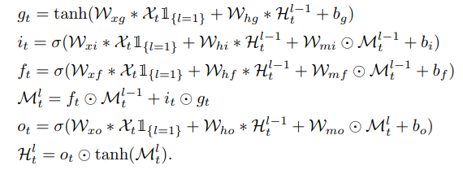
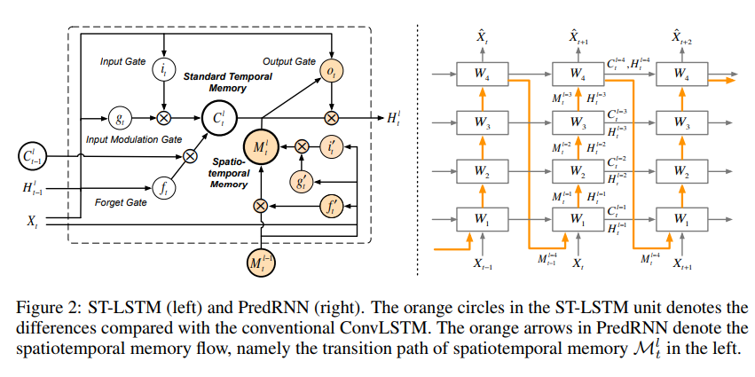
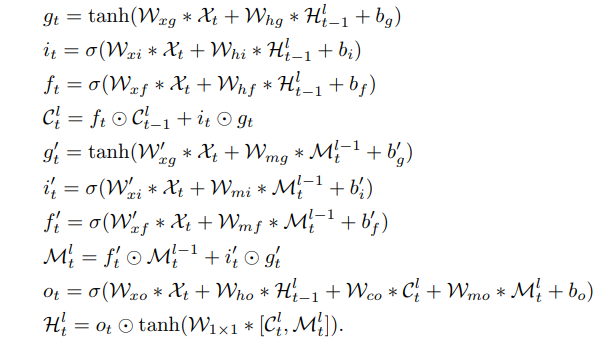

NIPS2017
这篇文章是在convLSTM的基础上做了一些改进，改进的方法主要是用在帧序列的预测上的。
(偷懒，公式全是截图的)
ConvLSTM的式子其实就是把原来gate里的矩阵乘法变成了卷积操作而已。

多层堆叠的形式与LSTM的形式几乎一致。

然后作者认为LSTM中上一个时刻高层的特征可以对下一帧底层的特层产生影响，然后就增加了一个cell state，从上一个时刻的顶层，连到这一个时刻的底层。


可以看到，上面的做法是去掉了原来时序上同一个level上的隐层的信息传递。然后我们再把这个隐层信息加上去，就可以得到最终的predRNN的结果。整体上就是把原来的一个cell state扩展成了两个cell state。然后两种cell state的传递的路径不一样。同事还有一个修改的地方就是output的gate是同时由两种cell state得到的。


loss的话，用的是L1+L2。其余部分比较常规，就是对比一下各个数据集上MSE,PSNR和SSIM几个指标。
Summary:
一个比较大的问题是，新增的M状态的路径太长，可能梯度效果不一定会很好。不过这篇文章并没有说明说明M的梯度的情况。另一个是，堆叠之后的PredRNN，M这个Cell state似乎需要每一层的dimension都要一样；不过有一点好的是在于由于把原来的算output gate里的element-wise的操作也换成了卷积，导致C和H的维度可以相对灵活。